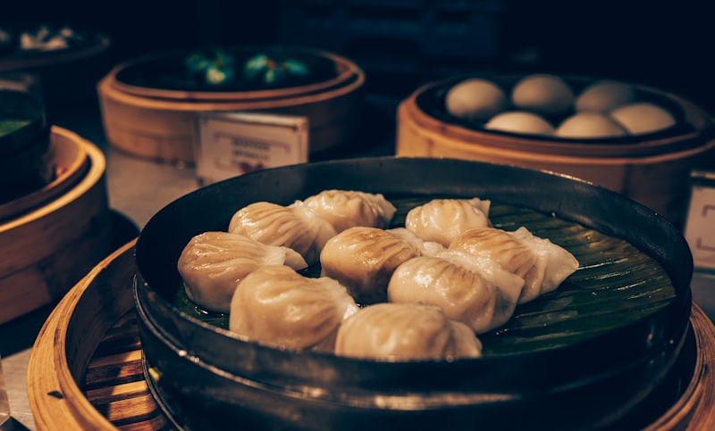

Chinese cuisine is one of the world's great culinary traditions, with a history spanning thousands of years. The "Eight Great Cuisines" represent the remarkable diversity of flavors, techniques, and ingredients across China. For Japanese visitors, Chinese food offers both familiar comfort and exciting discoveries.
🇯🇵 Chinese Food & Japan
Many Japanese beloved dishes have Chinese origins: ramen (拉面), gyoza (饺子), and champon all trace back to Chinese cuisine. But authentic Chinese food in China is vastly more diverse than what's found in Japanese "Chinese restaurants." Prepare to be amazed by the real thing!



The Eight Great Cuisines
Sichuan Cuisine (川菜)
Famous for bold, pungent flavors and the legendary mala (麻痺) numbing-spicy combination. Signature dishes: Mapo Tofu, Kung Pao Chicken, Sichuan Hot Pot. The Sichuan peppercorn creates a unique tingling sensation unlike anything in Japanese cuisine.
Cantonese Cuisine (粤菜)
Delicate, fresh flavors that let ingredients shine. Dim Sum is the crown jewel — steamed dumplings, rice rolls, and custard tarts. Also famous for roast duck, congee, and seafood. Most similar to flavors Japanese palates already enjoy.
Beijing Cuisine (京菜)
Imperial heritage meets hearty northern fare. The legendary Peking Duck — crispy skin, tender meat, wrapped in thin pancakes with hoisin sauce. Also: zhajiang noodles, lamb hot pot, and imperial court cuisine.
Jiangsu Cuisine (苏菜)
Refined, slightly sweet flavors with exquisite presentation. Signature dishes: Squirrel Fish (sweet and sour whole fish), Nanjing Salted Duck, Yangzhou Fried Rice. Known as "the cuisine of scholars."
Zhejiang Cuisine (浙菜)
Elegant, mellow flavors with an emphasis on freshness. West Lake Vinegar Fish, Dongpo Pork (braised pork belly), Longjing Shrimp (cooked with Dragon Well tea leaves). Perfectly complements a West Lake visit.
Fujian Cuisine (闽菜)
Umami-rich soups and seafood dishes. Buddha Jumps Over the Wall (佛跳墙) is the legendary multi-ingredient soup. The flavors share similarities with Taiwanese and Okinawan cuisine.
Hunan Cuisine (湘菜)
Hot and sour — spicier than Sichuan but without the numbing pepper. Chairman Mao's Red Braised Pork is a must-try. Smoked meats and sour pickles are hallmarks.
Shandong Cuisine (鲁菜)
The oldest and most influential of the Eight Cuisines, dating back 2,500 years. Known for seafood, soups, and the masterful use of scallions. Braised Abalone and Sweet & Sour Carp are classics.
Must-Try Dishes by Destination
Beijing
- Peking Duck (北京烤鸭): The original at Quanjude or Da Dong — crispy skin carved tableside
- Zhajiang Noodles (炸酱面): Hand-pulled noodles with fermented bean paste
- Jianbing (煎饼): Chinese crepe — the ultimate breakfast street food
Xi'an
- Biángbiáng Noodles (油泼扯面): Wide hand-pulled noodles with chili oil — Xi'an's signature
- Roujiamo (肉夹馍): "Chinese hamburger" — braised pork in a baked bun
- Yangrou Paomo (羊肉泡馍): Lamb soup with torn bread — a Silk Road classic
Shanghai

- Xiaolongbao (小笼包): Soup dumplings — delicate parcels of broth and pork filling
- Shengjianbao (生煎包): Pan-fried soup buns — crispy bottom, juicy filling
- Hairy Crab (大闸蟹): Autumn delicacy — sweet roe and tender meat
Chengdu
- Hot Pot (火锅): The Sichuan experience — bubbling chili broth for cooking your own ingredients
- Mapo Tofu (麻婆豆腐): Silky tofu in spicy, numbing sauce — the original is life-changing
- Dandan Noodles (担担面): Spicy sesame noodles — simple but addictive
Hangzhou
- Dongpo Pork (东坡肉): Melt-in-your-mouth braised pork belly, named after poet Su Shi
- West Lake Vinegar Fish (西湖醋鱼): Tender fish in sweet-sour sauce
- Beggar's Chicken (叫花鸡): Chicken baked in clay — theatrical presentation
🌶️ Spice Tolerance Tip
If you're not used to spicy food, start with Cantonese or Jiangsu cuisine, then gradually try milder Sichuan dishes. In restaurants, you can ask for "微辣" (wēi là, mild spice) or "不辣" (bù là, no spice). Most restaurants are happy to adjust the heat level for Japanese visitors!